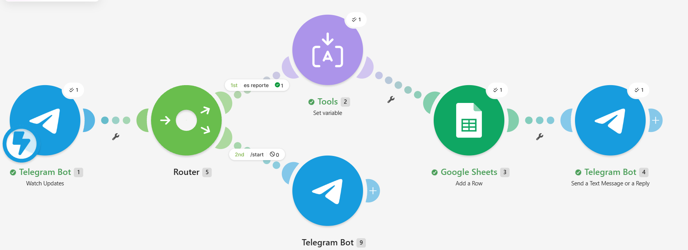

Resumen
Buzón ciudadano automatizado en Telegram que recibe reportes ambientales, los registra en Google Sheets con fecha y usuario, y responde al ciudadano con un folio de seguimiento. Se construyó sin programar, con Telegram (BotFather), Make y Google Sheets.
Escenario en Make

- Telegram recibe el mensaje del ciudadano.
- El router separa los reportes de los comandos como
/start. - Se genera el folio
AMB-YYMMDD-HHmmsscon la hora local. - Se guarda una fila en Google Sheets con folio, fecha, usuario, nombre, reporte y estatus.
- El bot responde con el folio y el estatus Recibido.